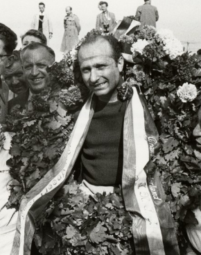

Nascido em 24 de junho de 1911, na Argentina, é considerado uma lenda da Fórmula 1. Com uma carreira ativa na década de 1950, ele venceu 5 campeonatos mundiais, um recorde que permaneceu por mais de 40 anos. Fangio era conhecido por sua habilidade em dominar em diferentes equipes e por sua abordagem estratégica nas corridas.